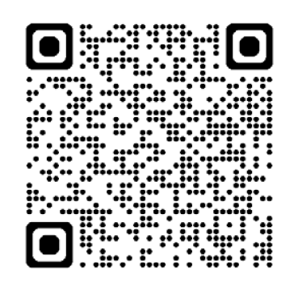
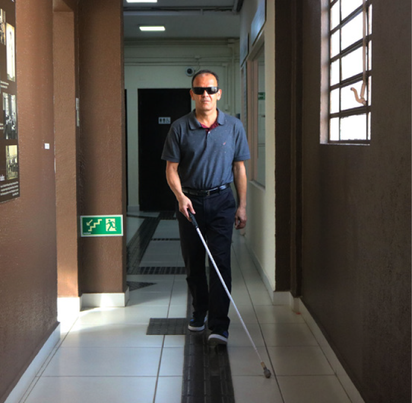
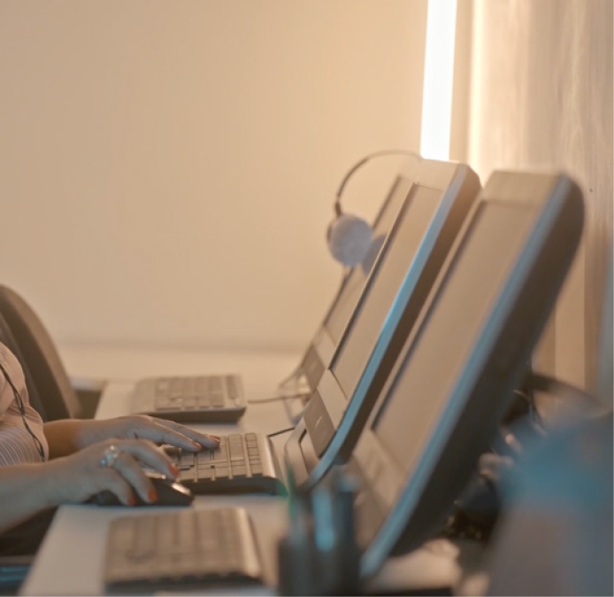
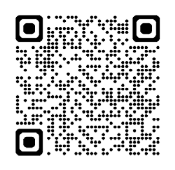
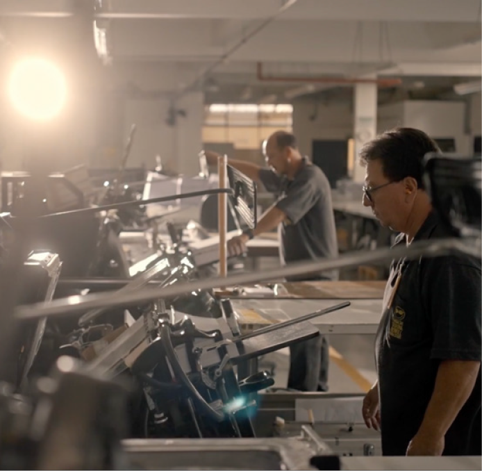
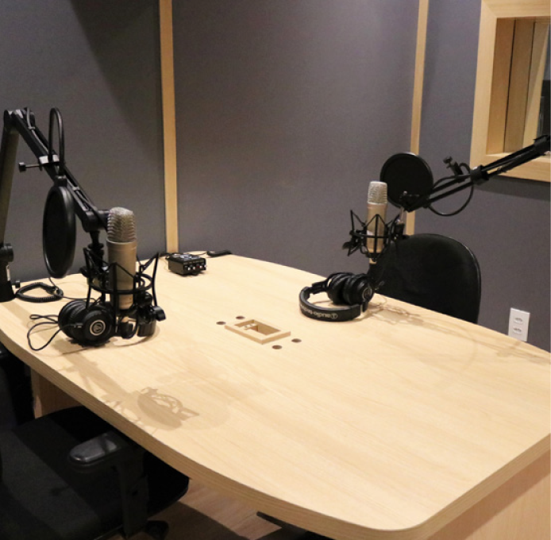
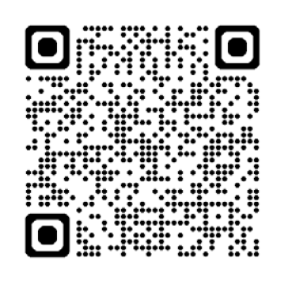
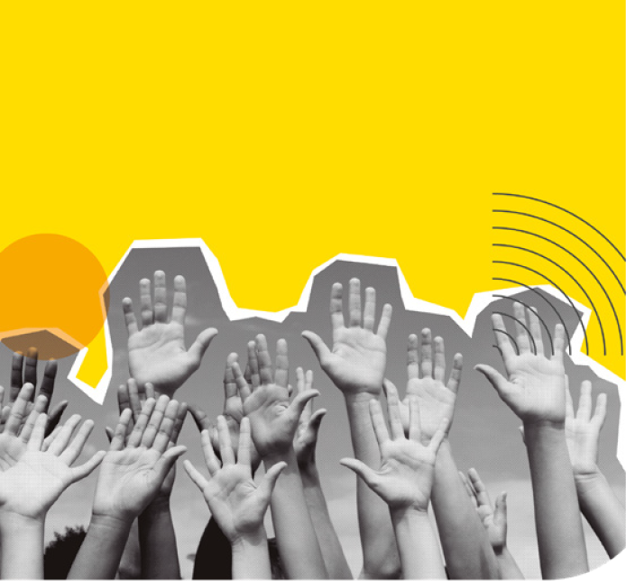
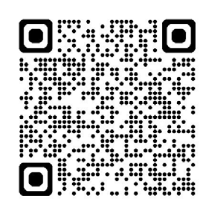
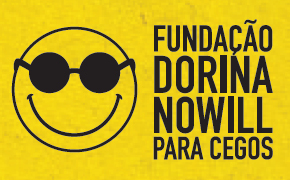

CAPA
![Imagem: Capa. Ao centro, logotipo da Fundação Dorina Nowill para Cégos, composto por um hemôji amarelo, com um largo sorriso, e óculos pretos e redondos; seguido pelo nome. Na parte superior, o texto: AJUDAMOS A CONSTRUIR UM futuro MAIS inclusivo PARA PESSOAS CÉGAS E COM BAIXA VISÃO. Na parte inferior esquerda, o texto: Além dos serviços de habilitação e reabilitação, promovemos iniciativas, projetos e serviços que contribuem para maior acessibilidade, inclusão e autonomia de pessoas cégas e com baixa visão. À direita, ilustração da silhueta de uma pessoa de braços abertos dentro de um círculo. Seguido pelo texto: Escaneie o QR Code e tenha acesso à VERSÃO COM ACESSIBILIDADE deste material: QR Code. O fundo é amarelo com círculos em tons de amarelo, pontos e curvas em preto. Fim da imagem.](../resources/images/image_Image12634.png)
1

FUNDAÇÃO DORINA NOWILL PARA CEGOS
Promover a autonomia e a independência de pessoas cegas e com baixa visão e, ao mesmo tempo, conscientizar a sociedade sobre inclusão e acessibilidade são os objetivos da Fundação Dorina Nowill para Cegos.
O nome da instituição vem da sua fundadora, Dorina de Gouvêa Nowill, que perdeu a visão aos 17 anos, mas jamais desistiu de estudar e ler. Começou, em 1946, a Fundação para o Livro do Cego no Brasil, com a missão de produzir livros em braille — atividade que segue sendo realizada.
Ao longo desses anos, a Fundação se modernizou, inovou e evoluiu em diversas áreas na inclusão desse público, tanto nas soluções das áreas editorial, gráfica e audiovisual como nos serviços de apoio à inclusão, sendo reconhecida no Brasil e no mundo pelo trabalho que realiza com excelência.
Acesse o site e saiba mais:
fundacaodorina.org.br

2
SERVIÇOS DE APOIO À INCLUSÃO

ATENDIMENTO
As equipes multidisciplinares da Fundação Dorina Nowill para Cegos oferecem possibilidades de uma vida com mais autonomia e independência às pessoas cegas e com baixa visão por meio dos atendimentos gratuitos, realizados também para os familiares.
Os serviços de habilitação e reabilitação atendem crianças, jovens, adultos e idosos, sem restrição de idade, nas seguintes áreas:
• Serviço Social
• Psicologia
• Pedagogia
• Terapia Ocupacional
• Fisioterapia
• Orientação e Mobilidade
• Oftalmologia
• Ortóptica
CURSOS
Os cursos têm por objetivo contribuir para o desenvolvimento pessoal e profissional de jovens e adultos com deficiência visual.
São oferecidos de forma gratuita cursos livres de qualificação e capacitação específica, para possibilitar aos alunos sua inclusão no mercado de trabalho, seja como primeira oportunidade (colocação) ou mesmo a retomada das atividades profissionais (recolocação).

Para saber mais, entre em contato com a área de Serviços de Apoio à Inclusão:
(11) 5087-0999 – Opção 2 | (11) 5087-0998
atendimento@fundacaodorina.org.br
SERVIÇO DE EDUCAÇÃO E CULTURA
BIBLIOTECA INCLUSIVA
A Biblioteca Inclusiva, com atendimento de referência para o público com deficiência visual, promove o acesso ao livro e à leitura em seu espaço de atividades e também em sua plataforma digital Dorinateca, com a oferta de mais de 5 mil títulos nos diversos formatos acessíveis aos leitores com deficiência visual e bibliotecas de todo Brasil.
(11) 5087-0990
biblioteca@fundacaodorina.org.br
Acesse o site e saiba mais:
dorinateca.org.br

3
REDE DE LEITURA INCLUSIVA
![Imagem: Fotografia. À direita, uma mulher com cabelos crespos presos em um coque, usa camiseta branca e calça jeans e crachá ao redor do pescoço, está de pé, próxima a uma parede branca com o logotipo da Fundação Dorina Nowill para Cégos iluminado. Em frente dela, há cadeiras brancas vazias dispostas lado a lado. À esquerda, quatro pessoas estão sentadas em carteiras escolares brancas, próximas a uma mesa retangular coberta por toalha amarela e laranja. Sobre a mesa há papéis e livros. Ao fundo, há bandeiras posicionadas na vertical. Fim da imagem.](../resources/images/image_Image12722.png)
A Rede de Leitura Inclusiva cuida da articulação com instituições de educação e leitura pelo Brasil, faz a distribuição de livros acessíveis, além de promover diálogos sobre como implementar a acessibilidade nos espaços. Engaja os profissionais que atuam como intermediários da leitura e forma Grupos de Trabalho, com a finalidade de construir novas ações de leitura e inclusão, e potencializar as já existentes.
(11) 5087-0960
leiturainclusiva@fundacaodorina.org.br
CENTRO DE MEMÓRIA E VISITAS MEDIADAS

O Centro de Memória Dorina Nowill, inaugurado em 2002, tem a missão de apresentar e preservar a história da luta das pessoas cegas e com baixa visão no Brasil e no mundo, trazendo o protagonismo de Dorina de Gouvêa Nowill e sua trajetória até a criação da Fundação Dorina Nowill para Cegos.
A visita mediada à Fundação é gratuita e a ideia é que o participante faça uma imersão no universo da acessibilidade e inclusão.
IMPORTANTE: É necessário o agendamento prévio.
(11) 5087-0955
centrodememoria@fundacaodorina.org.br
EMPREGABILIDADE
A área de Empregabilidade da Fundação Dorina realiza a conexão entre o candidato com deficiência visual e a empresa.
Auxilia pessoas cegas e com baixa visão no processo de construção de carreiras com significado, para que conquistem independência financeira e crescimento profissional.
Já com as empresas, tem o objetivo de fortalecer a participação na inclusão e divulgar vagas afirmativas para pessoas com deficiência visual. Para isso, oferece palestras educativas, capacitações e treinamentos, em formato presencial ou online, de acordo com a quantidade de participantes.
(11) 5087-0953 | (11) 93033-0272
empregabilidade@fundacaodorina.org.br
4
SOLUÇÕES EM ACESSIBILIDADE
BRAILLE: EDITORIAL, GRÁFICA E REVISÃO

Já pensou em uma forma de comunicação que transcende as barreiras visuais e conecta pessoas, conhecimento e experiências pelo sentido do tato? É exatamente isso que o núcleo Braille faz, sendo referência na área desde sua criação, ajudando a tornar a informação acessível a todos, e promovendo a inclusão e a igualdade de oportunidades.
Os materiais e projetos passam pela transcrição braille realizada pelo nosso editorial, e são revisados por uma equipe composta por profissionais com deficiência visual. A impressão é feita em nossa gráfica, assegurando qualidade e acessibilidade.
AUDIOVISUAL

A Fundação Dorina está totalmente capacitada para a produção de materiais acessíveis em audiovisual. Desde a produção até a finalização, garantimos que cada aspecto seja cuidadosamente adaptado às necessidades específicas do seu projeto.
Com equipamentos de última geração, nossos estúdios contam com profissionais altamente qualificados, que priorizam a acessibilidade em todas as etapas, para transformar suas ideias em realidade.
Serviços oferecidos:
• Audiolivros com gravação em voz humana
• Adaptação de produtos para áudio
• Gravação de videoaulas e podcasts educacionais
• Audiodescrição
• Libras
• Legendagem
EDITORIAL DIGITAL
Apresentamos soluções completas e inovadoras para a conversão de obras didáticas, literárias e qualquer outro material textual para o formato digital, garantindo total acessibilidade a pessoas com deficiência visual.
Nossos serviços de livros digitais seguem rigorosamente as melhores práticas e diretrizes internacionais de acessibilidade, bem como atendem aos requisitos do Programa Nacional do Livro Didático (PNLD). Trabalhamos com os formatos: HTML5, ePub3 e OED’s.
5
CONSULTORIA EM ACESSIBILIDADE

Imagine um mundo onde todos os produtos, serviços e espaços são acessíveis a todos, proporcionando uma experiência inclusiva e envolvente.
Esse é o sonho da Fundação Dorina e queremos torná-lo realidade com os serviços de Consultoria em Acessibilidade para empresas.
• Consultoria Web
Do desenvolvimento até a experiência final do usuário com deficiência visual na navegação de sites e aplicativos, garantindo que todos possam acessar e utilizar as plataformas de forma autônoma e eficiente.
• Consultoria Arquitetônica
Do projeto à execução, seguindo as diretrizes nacionais de acessibilidade. Todos os espaços são validados por uma pessoa com deficiência visual, garantindo não apenas conformidade técnica, mas também funcionalidade real, inclusão e insights práticos que vão além da norma.
Fale com a nossa equipe para tornar seus produtos e serviços mais acessíveis. Solicite o orçamento*:
(11) 5081-0999 (Opção 1)
comercial@fundacaodorina.org.br
(*) Todo valor é revertido para os atendimentos gratuitos a pessoas cegas e com baixa visão realizados pela Fundação Dorina.
CENTRAL DE FORMAÇÕES
![Imagem: Fotografia. Um homem com cabelos curtos e barba está sentado à frente de um notebook sobre uma mesa. O notebook está aberto e na tela, há duas mulheres: à direita, uma mulher com cabelos loiros e lisos véste bleizer preto e está sorrindo; à esquerda, outra mulher com cabelos pretos e lisos faz sinais em Libras. No canto superior esquerdo da tela do notebook há o logotipo da Fundação Dorina Nowill para Cégos. Sobre a mesa, próximo ao notebook, há uma planta pequena em vaso preto, além de papéis coloridos. Fim da imagem.](../resources/images/image_Image12846.png)
Nossa plataforma de cursos é dedicada a oferecer um ambiente de aprendizado inclusivo por meio de conteúdos e recursos acessíveis. Acreditamos que o conhecimento é um direito de todos.
O que você encontra na Central de Formações:
• Profissionais qualificados
• Plataforma de educação à distância
• Variedade de cursos na área da inclusão
• Palestras e workshops personalizados, presenciais e online, para empresas
Pessoas cegas e com baixa visão, cadastradas na Dorinateca, possuem acesso gratuito aos cursos.
Acesse o site e saiba mais:
cursos.fundacaodorina.org.br

6
FAÇA PARTE
VOLUNTARIADO

Seja um voluntário da Fundação Dorina Nowill para Cegos! Você poderá apoiar atividades operacionais, culturais, educacionais e administrativas, contribuindo para a realização de ações que impactam diretamente pessoas que atendemos.
Além disso, oferecemos a opção de voluntariado corporativo, permitindo que empresas e seus colaboradores participem ativamente de ações sociais. Essa iniciativa fortalece o compromisso com a responsabilidade social, engajamento da equipe e gera impacto positivo na comunidade.
(11) 5087-0971 | (11) 96057-8610
voluntariado@fundacaodorina.org.br
SEJA UM DOADOR
Faça a sua doação e ajude a transformar a vida de pessoas com deficiência visual.
(11) 5087-0999 – Opção 4
relacionamento@fundacaodorina.org.br
Acesse o QR code e doe agora:

PATROCÍNIOS E PARCERIAS
Apoie os projetos da Fundação Dorina por meio das Leis de Incentivo, para abatimento de impostos, ou fazendo patrocínios diretos. A sua empresa também pode ajudar com a doação de produtos e/ou com MRC (Marketing Relacionado à Causa).
(11) 5087-0999 – Opção 5
parceria@fundacaodorina.org.br
7

Fundação Dorina Nowill para Cegos
Rua Doutor Diogo de Faria, 558 - Vila Clementino
São Paulo/SP Brasil • CEP: 04037-001
Metrô
Linha 1 (Azul): Estação Shopping Santa Cruz
Linha 5 (Lilás): Estação Hospital São Paulo
+55 (11) 5087-0999 / 5554-0999
fundacaodorinanowill
fundacaodorina
fundacaodorina
FundacaoDorinaNowill
Dorinacast